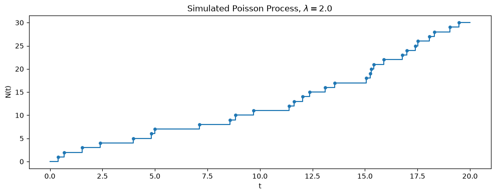
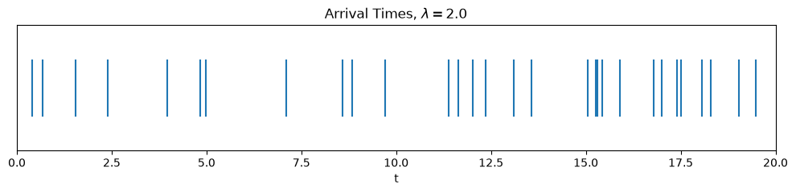
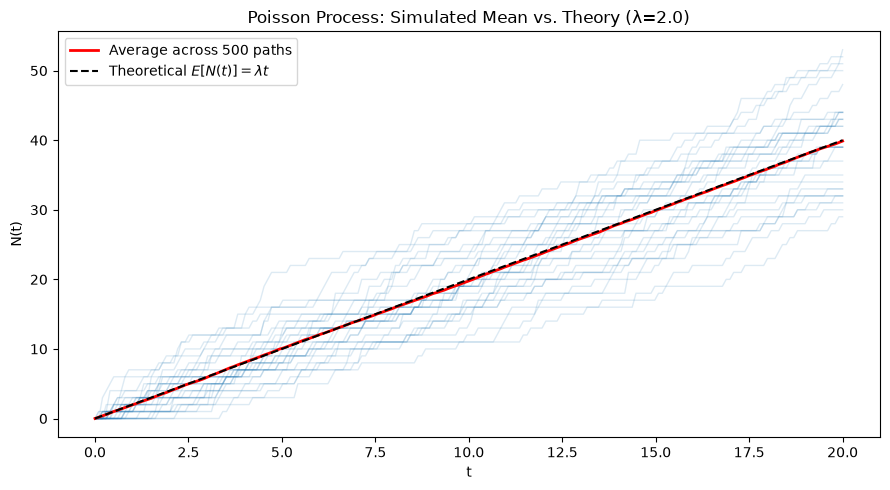
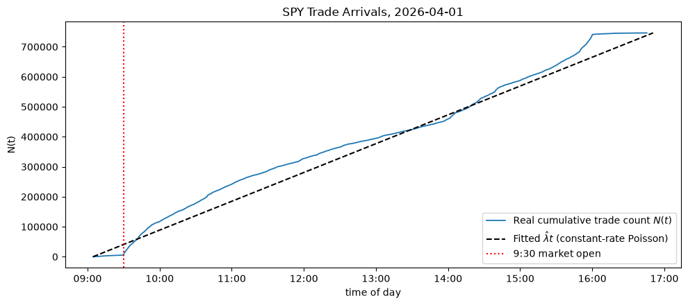
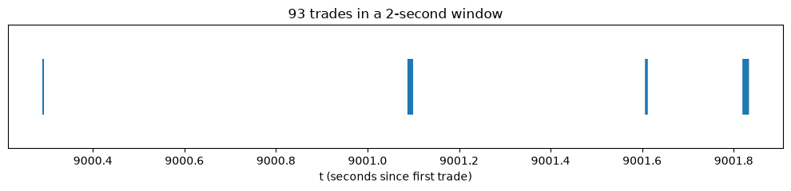
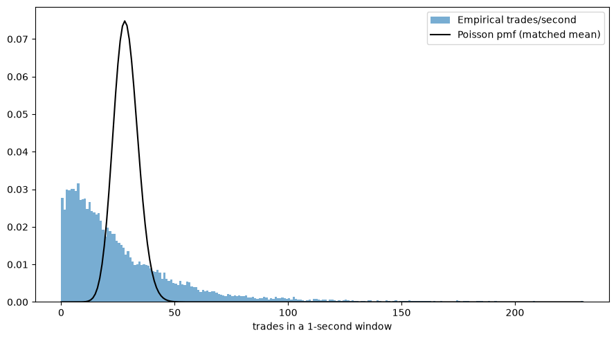
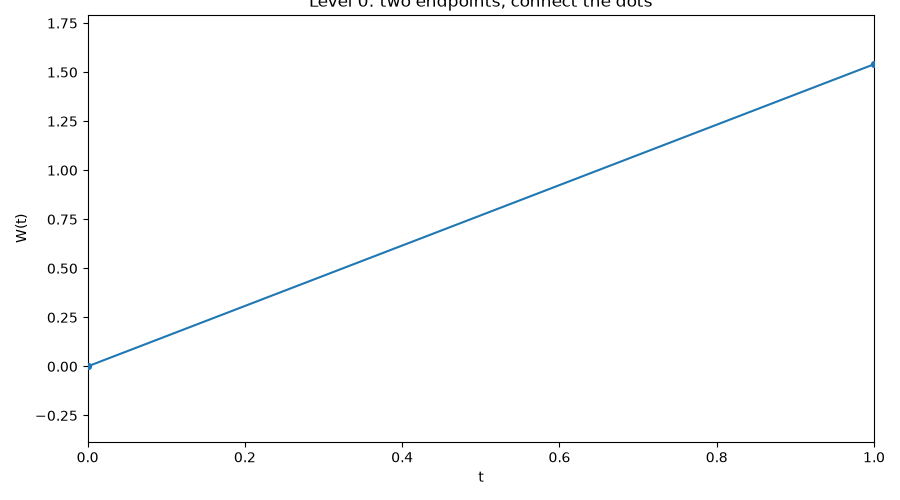
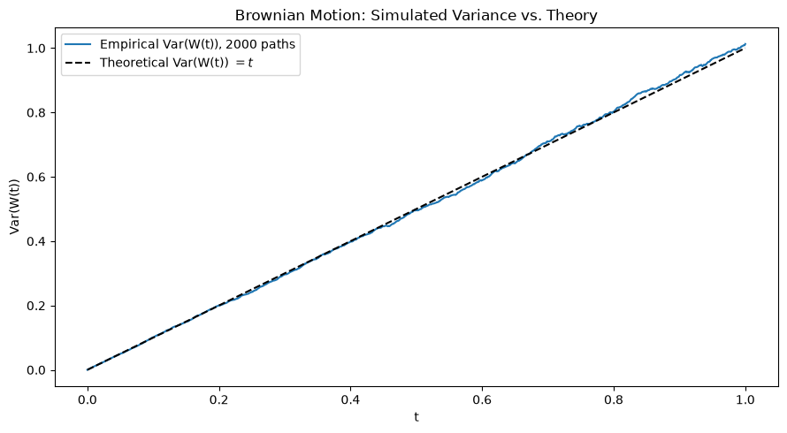

Observations X_1, X_2, \ldots, X_n sampled at discrete time points (e.g. daily, weekly or monthly returns)
ARMA and GARCH models
Everything indexed by an integer t
Now we shift to continuous time:
Events at every time stamp (no gaps)
A price path that moves continuously, not once per day
Models indexed by a real number t \geq 0, not an integer
Why Continuous Time?
Daily closing prices hide everything that happens during the day. Some questions can’t be answered with daily data at all:
How wide should a market maker set the bid-ask spread?
How do I hedge a position in options at every time point
How often does an order arrive at a given price level?
How much inventory risk builds up between trades?
These require modeling when things happen, not just their once-a-day summary.
The Case Study for This Part
Our case study for Part 3:
High-frequency market making — quoting bid and ask prices, managing inventory, and earning the spread while orders arrive continuously and prices jitter tick by tick. We introduce it now and build the tools to analyze it over Modules 7–8.
A preview: the same continuous-time toolkit — Poisson processes, Brownian motion, and (soon) Itô’s lemma — is also exactly what CS 4 (options pricing, Modules 9–11) needs. Building it carefully now pays off twice.
Prelude: The Market Maker’s Problem
A market maker simultaneously:
Quotes a bid price (buy) and ask price (sell) around the current fair value
Earns the bid-ask spread on each round trip
Risks holding unwanted inventory if the market moves before they can offload it
Two random ingredients drive this problem:
When do orders arrive? — modeled with a Poisson process
How does the fair price move? — modeled with Brownian motion
This module builds both tools from scratch, with CS 3 as the running example. Module 8 uses them for CS 3 directly — and the same building blocks resurface in CS 4, once we add Itô’s lemma in Module 9.
Part 2: The Poisson Process
Counting Random Arrivals
Let N(t) count the number of events (e.g., buy orders) that have occurred by time t, starting from N(0) = 0.
\{N(t)\}_{t \geq 0} is a Poisson process with rate \lambda > 0 if:
N(0) = 0
Independent increments: the number of events in disjoint time intervals are independent
Stationary increments: the distribution of N(t+s) - N(s) doesn’t depend on s
N(t+h) - N(t) \sim \text{Poisson}(\lambda h) for any h > 0
\lambda is the arrival rate — the expected number of events per unit time.
Key Properties
Expectation and variance:
E[N(t)] = \lambda t, \qquad \text{Var}(N(t)) = \lambda t
Interarrival times: the gaps between consecutive events, T_1, T_2, \ldots, are IID:
T_i \sim \text{Exponential}(\lambda), \qquad E[T_i] = \frac{1}{\lambda}
Memorylessness: given that we’ve waited s time units for the next event with no arrival yet, the additional waiting time is still \text{Exponential}(\lambda) — the process has no memory of how long you’ve already waited.
This is an assumption that may not hold in practice, but is still useful.
Simulating a Poisson Process
In principle you could draw N(t) directly from \text{Poisson}(\lambda t) for any fixed t — but that only gives you the count, not the full path, and you can’t get the path by drawing a Poisson count at every t since there are uncountably many of them.
Instead, we simulate the path exactly: draw exponential interarrival times and cumulatively sum them to get each arrival time.
import numpy as npimport matplotlib.pyplot as pltnp.random.seed(5005)lam =2.0# arrival rate, events per unit timeT_max =20.0# simulate up to this timeinterarrival = np.random.exponential(scale=1/ lam, size=200)arrival_times = np.cumsum(interarrival)arrival_times = arrival_times[arrival_times <= T_max]t_grid = np.concatenate(([0], arrival_times, [T_max]))N_grid = np.concatenate(([0], np.arange(1, len(arrival_times) +1), [len(arrival_times)]))fig, ax = plt.subplots(figsize=(10, 4))ax.step(t_grid, N_grid, where="post", color="C0")ax.scatter(arrival_times, np.arange(1, len(arrival_times) +1), color="C0", s=15, zorder=5)ax.set_title(fr"Simulated Poisson Process, $\lambda={lam}$")ax.set_xlabel("t")ax.set_ylabel("N(t)")plt.tight_layout()plt.show()
N(t) is a step function: it jumps by 1 at each random arrival time and is flat in between.
Simulating a Poisson Process

The Arrival Times Themselves
The step function above is really just a running count of the dots below — the arrival times T_1, T_2, T_3, \ldots plotted directly on the timeline:
Notice the gaps between consecutive ticks aren’t equal — some events arrive in quick succession, others after a long quiet stretch. Those gaps are exactly the \text{Exponential}(\lambda) interarrival times T_i from the previous slide.
The Arrival Times Themselves

Checking E[N(t)] = \lambda t
Simulate many independent paths and compare the average count at each time to the theoretical line \lambda t:
import numpy as npimport matplotlib.pyplot as pltnp.random.seed(5005)lam =2.0T_max =20.0n_paths =500t_eval = np.linspace(0, T_max, 200)counts = np.zeros((n_paths, len(t_eval)))for i inrange(n_paths): interarrival = np.random.exponential(scale=1/ lam, size=200) arrival_times = np.cumsum(interarrival) counts[i] = np.searchsorted(arrival_times, t_eval, side="right")fig, ax = plt.subplots(figsize=(9, 5))for i inrange(30): ax.plot(t_eval, counts[i], color="C0", alpha=0.15, lw=1)ax.plot(t_eval, counts.mean(axis=0), color="red", lw=2, label="Average across 500 paths")ax.plot(t_eval, lam * t_eval, color="black", ls="--", lw=1.5, label=r"Theoretical $E[N(t)]=\lambda t$")ax.set_title(f"Poisson Process: Simulated Mean vs. Theory (λ={lam})")ax.set_xlabel("t")ax.set_ylabel("N(t)")ax.legend()plt.tight_layout()plt.show()
The empirical average (red) tracks the theoretical line \lambda t (dashed black) closely.
Checking E[N(t)] = \lambda t

Order Flow as a Poisson Process
In market microstructure, a common starting assumption: buy orders and sell orders each arrive as independent Poisson processes with their own rates \lambda_{\text{buy}}, \lambda_{\text{sell}}.
Higher \lambda near the current fair price, lower \lambda further away — orders cluster near the touch.
A market maker’s fill rate depends on how far their quote sits from fair value: post further away, fewer fills but each is more profitable.
We’ll use exactly this assumption to build a simple market-making model in Module 8, following Avellaneda & Stoikov (2008).
Real Order Flow: SPY Trades, 2026-04-01
scripts/20260401.txt is a full day of raw SPY market data — 1.78M timestamped lines. Most are quote (bid/ask) updates, but 746,266 of them are trade prints (last=), each with a microsecond timestamp:
We’ll pull out just the trade timestamps and treat them as arrivals of a counting process N(t) — exactly like the simulated Poisson process above, but real.
import numpy as npimport pandas as pdtimes = []withopen("../../scripts/20260401.txt") as f:for line in f:if"last="notin line:continue i = line.index("time=") +5 j = line.index(",", i) times.append(line[i:j])ts = pd.to_datetime(times)secs = np.sort((ts - ts.normalize()).total_seconds().to_numpy())t = secs - secs[0] # seconds since first traden =len(t)lam_hat = n / t[-1] # trades per second, averaged over the dayprint(f"{n:,} trades over {t[-1]/3600:.2f} hours; "f"average rate lambda_hat = {lam_hat:.2f} trades/sec")
746,266 trades over 7.77 hours; average rate lambda_hat = 26.69 trades/sec
Cumulative Trade Count vs. \lambda t
import matplotlib.pyplot as pltimport matplotlib.dates as mdatescounts = np.arange(1, n +1)step =200# subsample for a fast, still-smooth plotclock = pd.to_datetime(ts).sort_values() # wall-clock time for each trademarket_open = clock[0].normalize() + pd.Timedelta(hours=9, minutes=30)fig, ax = plt.subplots(figsize=(10, 4.5))ax.plot(clock[::step], counts[::step], color="C0", lw=1.3, label="Real cumulative trade count $N(t)$")ax.plot(clock, lam_hat * t, color="black", ls="--", lw=1.5, label=r"Fitted $\hat\lambda t$(constant-rate Poisson)")ax.axvline(market_open, color="red", ls=":", lw=1.5, label="9:30 market open")ax.xaxis.set_major_formatter(mdates.DateFormatter("%H:%M"))ax.set_xlabel("time of day")ax.set_ylabel("N(t)")ax.set_title("SPY Trade Arrivals, 2026-04-01")ax.legend()plt.tight_layout()plt.show()
Unlike the simulated path, this isn’t close to a straight line: it’s flat before the 9:30 open (dotted red line), steep right at the open, flatter over midday, then steep again near the close. The constant-rate assumption is violated — real order flow rate depends on time of day, exactly the U-shaped intraday volume pattern well documented in market microstructure.
Cumulative Trade Count vs. \lambda t

Zooming In: Bursty Arrivals
mask = (t >150*60) & (t <150*60+2)tw = t[mask]fig, ax = plt.subplots(figsize=(10, 2.5))ax.eventplot(tw, lineoffsets=0, linelengths=0.8, color="C0")ax.set_xlabel("t (seconds since first trade)")ax.set_yticks([])ax.set_title(f"{len(tw)} trades in a 2-second window")plt.tight_layout()plt.show()
Zoomed in, arrivals aren’t spread out evenly like the simulated example either — they come in tight bursts (the same trade often prints to multiple exchanges within microseconds of each other), separated by quieter gaps.
This is a form of clustering the simple Poisson model doesn’t capture. FYI: this is a very inexpensive data feed, but even a good one would show bursty behavior.
Zooming In: Bursty Arrivals

Counts per Second: Poisson vs. Reality
If N(t) were really a constant-rate Poisson process, the number of trades in each one-second window should be roughly \text{Poisson}(\hat\lambda) — with mean equal to variance.
Variance is roughly 50x the mean, not equal to it — real order flow is far more overdispersed than a Poisson process allows. The Poisson assumption is a useful starting point (it’s what makes Module 8’s market-making model tractable), but real data shows its limits: rates vary over the day and arrivals cluster in bursts.
Counts per Second: Poisson vs. Reality
mean = 28.5, variance = 1345.1

Part 3: Brownian Motion
From Random Walk to Brownian Motion
Recall the discrete-time random walk S_n = \sum_{i=1}^n Z_i with \{Z_i\} \sim \text{IID}(0, \sigma^2).
Brownian motion\{W(t)\}_{t \geq 0} is the continuous time analog. It’s what you get by taking that random walk, shrinking the step size, and speeding up the clock — all at once, in a precise way:
Split [0, t] into n steps of size t/n
Take IID steps with variance t/n (so total variance stays t)
Let n \to \infty
The limit is a process with continuous paths but that is nowhere differentiable — it wiggles infinitely much at every scale.
Watching It Get Rough: The Lévy Construction
Another way to build Brownian motion: start with just the two endpoints, connect the dots, then repeatedly fill in the midpoint of every segment with a random displacement — each new generation of midpoints uses a smaller displacement, so the path gets rougher at a finer and finer scale but never overshoots by much:

Each frame doubles the number of known points. Given the endpoints W(a) and W(b) of a segment, the midpoint W\left(\frac{a+b}{2}\right) is Normal with mean \frac{W(a)+W(b)}{2} (the straight-line average) and variance \frac{b-a}{4} — a Brownian bridge midpoint. Repeating this forever and connecting the dots at every level converges to a genuine Brownian path: continuous, but rough at every scale.
Definition
\{W(t)\}_{t \geq 0} is a (standard) Brownian motion if:
W(0) = 0
Independent increments:W(t) - W(s) is independent of \{W(u) : u \leq s\} for s < t
Stationary, Normal increments:W(t) - W(s) \sim N(0, t-s) for s < t
Continuous sample paths (as a function of t)
Key contrast with the Poisson process: both have independent, stationary increments, but Poisson increments are integer-valued jumps while Brownian increments are continuous and Normal.
Variance grows linearly in t — uncertainty about the level compounds over time.
Despite being continuous, the paths are so jagged that the usual notion of “speed” (derivative) doesn’t exist anywhere.
Brownian motion is the continuous-time analogue of white noise’s cumulative sum (a random walk) — it plays the same foundational role in continuous time that the random walk plays in discrete time.
Simulating Brownian Motion
Approximate a continuous path with a fine discrete grid: n steps of size \Delta t = T/n, each Normal with variance \Delta t.
import numpy as npimport matplotlib.pyplot as pltnp.random.seed(5005)T =1.0n =1000dt = T / nt_grid = np.linspace(0, T, n +1)n_paths =5increments = np.random.normal(scale=np.sqrt(dt), size=(n_paths, n))W = np.concatenate([np.zeros((n_paths, 1)), np.cumsum(increments, axis=1)], axis=1)fig, ax = plt.subplots(figsize=(10, 5))for i inrange(n_paths): ax.plot(t_grid, W[i], lw=1, label=f"Path {i+1}")ax.axhline(0, color="black", lw=0.8, ls="--")ax.set_title("Simulated Brownian Motion Paths")ax.set_xlabel("t")ax.set_ylabel("W(t)")ax.legend()plt.tight_layout()plt.show()
Every path starts at 0, and no two paths look alike — but all share the same variance-growth behavior.
The empirical variance across 2,000 simulated paths tracks the 45° line \text{Var}(W(t)) = t almost exactly.
Checking \text{Var}(W(t)) = t

Brownian Motion with Drift and Scale
The building block above is standard Brownian motion. A more general model for a price-like process adds a drift \mu and volatility \sigma:
X(t) = X(0) + \mu t + \sigma W(t)
E[X(t)] = X(0) + \mu t — a deterministic linear trend
\text{Var}(X(t)) = \sigma^2 t — uncertainty still grows linearly in t
This is the continuous-time analogue of a random walk with drift, and it’s the model we’ll use for the fair-value price process in the market-making case study.
Part 4: Looking Ahead to CS 3
Two Building Blocks, One Model
A simple high-frequency market-making model combines exactly the two processes from this module:
Fair valueX(t): a Brownian motion (with drift), moving continuously
Order arrivals: Poisson processes for buys and sells, with rates that depend on how far the market maker’s quotes sit from X(t)
Module 8 covers the market microstructure — exchange rules, priority, rebates, and data — that these two random processes actually operate inside of for CS 3.
And beyond CS 3: Brownian motion with drift is also the process underlying the Black-Scholes model in CS 4. Once we add martingale theory and Itô’s lemma (Module 9), the same X(t) = X(0) + \mu t + \sigma W(t) from this module becomes the engine behind option pricing.
What We Learned: Module 7 Summary
Concept
Role
Poisson process
Models when discrete events (orders) happen
Interarrival times
Exponential, memoryless — no dependence on elapsed waiting time
Brownian motion
Models continuous price movement
Independent, stationary increments
The shared structural property linking both processes
Both processes generalize a discrete-time idea we already know: the Poisson process is a continuous-time counting process, and Brownian motion is a continuous-time random walk.
Looking Ahead: Module 8
Next module: U.S. equity market structure — exchanges, price-time priority, maker-taker rebates, payment for order flow, and market data — the institutional plumbing behind the order arrivals and fills we’ve been modeling, and the background CS 3 assumes.
Module 9 then picks the math back up with martingales and Itô’s lemma, the tools for reasoning about fair games in continuous time, which feed directly into the Black-Scholes derivation for CS 4.
References
Avellaneda, M. & Stoikov, S. (2008). High-frequency trading in a limit order book. Quantitative Finance, 8(3), 217–224.